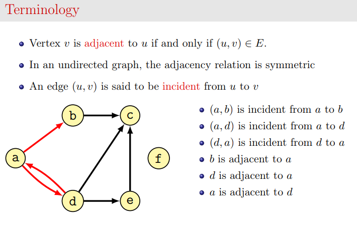

Graph algorithms¶
Download exercises zip¶
(before editing read whole introduction section 0.x)
What to do¶
unzip exercises in a folder, you should get something like this:
graph-algos
graph-algos.ipynb
graph.py
graph_sol.py
jupman.py
sciprog.py
open the editor of your choice (for example Visual Studio Code, Spyder or PyCharme), you will edit the files ending in
.pyfilesGo on reading this notebook, and follow instuctions inside.
Introduction¶
0.1 Graph theory¶
In short, a graph is a set of vertices linked by edges.
Longer version:
-
In particular, see Vocabulary and definitions


0.2 Directed graphs¶
In this worksheet we are going to use so called Directed Graphs (DiGraph for brevity), that is, graphs with directed edges: each edge can be pictured as an arrow linking source node a to target node b. With such an arrow, you can go from a to b but you cannot go from b to a unless there is another edge in the reverse direction.
DiGraphfor us can also have no edges or no verteces at all.Verteces for us can be anything, strings like ‘abc’, numbers like
3, etcIn our model, edges simply link vertices and have no weights
DiGraphis represented as an adjacency list, mapping each vertex to the verteces it is linked to.
QUESTION: is DiGraph model good for dense or sparse graphs?
0.3 Serious graphs¶
In this worksheet we follow the Do It Yourself methodology and create graph classes from scratch for didactical purposes. Of course, in Python world you have alread nice libraries entirely devoted to graphs like networkx, you can also use them for visualizating graphs. If you have huge graphs to process you might consider big data tools like Spark GraphX which is programmable in Python.
0.4 Code skeleton¶
First off, download the exercises zip and look at the files:
graph.py: the exercise to editgraph_test.py: the tests to run. Do not modify this file.
Before starting to implement methods in DiGraph class, read all the following sub sections (starting with ‘0.x’)
0.5 Building graphs¶
IMPORTANT: All the functions in section 0 are already provided and you don’t need to implement them !
For now, open a Python 3 interpreter and try out the graph_sol module :
[2]:
from graph_sol import *
0.5.1 Building basics¶
Let’s look at the constructor __init__ and add_vertex. They are already provided and you don’t need to implement it:
class DiGraph:
def __init__(self):
# The class just holds the dictionary _edges: as keys it has the verteces, and
# to each vertex associates a list with the verteces it is linked to.
self._edges = {}
def add_vertex(self, vertex):
""" Adds vertex to the DiGraph. A vertex can be any object.
If the vertex already exist, does nothing.
"""
if vertex not in self._edges:
self._edges[vertex] = []
You will see that inside it just initializes _edges. So the only way to create a DiGraph is with a call like
[3]:
g = DiGraph()
DiGraph provides an __str__ method to have a nice printout:
[4]:
print(g)
DiGraph()
To draw a DiGraph, you can use draw_dig from sciprog module - in this case draw nothing as the graph is empty:
[5]:
from sciprog import draw_dig
draw_dig(g)

You can add then vertices to the graph like so:
[6]:
g.add_vertex('a')
g.add_vertex('b')
g.add_vertex('c')
[7]:
print(g)
a: []
b: []
c: []
To draw a DiGraph, you can use draw_dig from sciprog module:
[8]:
from sciprog import draw_dig
draw_dig(g)

Adding a vertex twice does nothing:
[9]:
g.add_vertex('a')
print(g)
a: []
b: []
c: []
Once you added the verteces, you can start adding directed edges among them with the method add_edge:
def add_edge(self, vertex1, vertex2):
""" Adds an edge to the graph, from vertex1 to vertex2
If verteces don't exist, raises an Exception.
If there is already such an edge, exits silently.
"""
if not vertex1 in self._edges:
raise Exception("Couldn't find source vertex:" + str(vertex1))
if not vertex2 in self._edges:
raise Exception("Couldn't find target vertex:" + str(vertex2))
if not vertex2 in self._edges[vertex1]:
self._edges[vertex1].append(vertex2)
[10]:
g.add_edge('a', 'c')
print(g)
a: ['c']
b: []
c: []
[11]:
draw_dig(g)

[12]:
g.add_edge('a', 'b')
print(g)
a: ['c', 'b']
b: []
c: []
[13]:
draw_dig(g)

Adding an edge twice makes no difference:
[14]:
g.add_edge('a', 'b')
print(g)
a: ['c', 'b']
b: []
c: []
Notice a DiGraph can have self-loops too (also called caps):
[15]:
g.add_edge('b', 'b')
print(g)
a: ['c', 'b']
b: ['b']
c: []
[16]:
draw_dig(g)

0.5.2 dig()¶
dig() is a shortcut to build graphs, it is already provided and you don’t need to implement it.
USE IT ONLY WHEN TESTING, *NOT* IN THE ``DiGraph`` CLASS CODE !!!!
First of all, remember to import it from graph_test package:
[17]:
from graph_test import dig
With empty dict prints the empty graph:
[18]:
print(dig({}))
DiGraph()
To build more complex graphs, provide a dictionary with pairs source vertex / target verteces list like in the following examples:
[19]:
print(dig({'a':['b','c']}))
a: ['b', 'c']
b: []
c: []
[20]:
print(dig({'a': ['b','c'],
'b': ['b'],
'c': ['a']}))
a: ['b', 'c']
b: ['b']
c: ['a']
0.6 Equality¶
Graphs for us are equal irrespectively of the order in which elements in adjacency lists are specified. So for example these two graphs will be considered equal:
[21]:
dig({'a': ['c', 'b']}) == dig({'a': ['b', 'c']})
[21]:
True
0.7 Basic querying¶
There are some provided methods to query the DiGraph: adj, verteces, is_empty
0.7.1 adj¶
To obtain the edges, you can use the method adj(self, vertex). It is already provided and you don’t need to implement it:
def adj(self, vertex):
""" Returns the verteces adjacent to vertex.
NOTE: verteces are returned in a NEW list.
Modifying the list will have NO effect on the graph!
"""
if not vertex in self._edges:
raise Exception("Couldn't find a vertex " + str(vertex))
return self._edges[vertex][:]
[22]:
lst = dig({'a': ['b', 'c'],
'b': ['c']}).adj('a')
print(lst)
['b', 'c']
Let’s check we actually get back a new list (so modifying the old one won’t change the graph):
[23]:
lst.append('d')
print(lst)
['b', 'c', 'd']
[24]:
print(g.adj('a'))
['c', 'b']
NOTE: This technique of giving back copies is also called defensive copying: it prevents users from modifying the internal data structures of a class instance in an uncontrolled manner. For example, if we allowed them direct access to the internal verteces list, they could add duplicate edges, which we don’t allow in our model. If instead we only allow users to add edges by calling add_edge, we are sure the constraints for our model will always remain satisfied.
0.7.2 is_empty()¶
We can check if a DiGraph is empty. It is already provided and you don’t need to implement it:
def is_empty(self):
""" A DiGraph for us is empty if it has no verteces and no edges """
return len(self._edges) == 0
[25]:
print(dig({}).is_empty())
True
[26]:
print(dig({'a':[]}).is_empty())
False
0.7.3 verteces()¶
To obtain the verteces, you can use the function verteces. (NOTE for Italians: method is called verteces, with two es !!!). It is already provided and you don’t need to implement it:
def verteces(self):
""" Returns a set of the graph verteces. Verteces can be any object. """
# Note dict keys() return a list, not a set. Bleah.
# See http://stackoverflow.com/questions/13886129/why-does-pythons-dict-keys-return-a-list-and-not-a-set
return set(self._edges.keys())
[27]:
g = dig({'a': ['c', 'b'],
'b': ['c']})
print(g.verteces())
{'a', 'c', 'b'}
Notice it returns a set, as verteces are stored as keys in a dictionary, so they are not supposed to be in any particular order. When you print the whole graph you see them vertically ordered though, for clarity purposes:
[28]:
print(g)
a: ['c', 'b']
b: ['c']
c: []
Verteces in the edges list are instead stored and displayed in the order in which they were inserted.
0.8 Blow up your computer¶
Try to call the already implemented function graph_test.gen_graphs with small numbers for n, like 1, 2 , 3 , 4 …. Just with 2 we get back a lot of graphs:
def gen_graphs(n):
""" Returns a list with all the possible 2^(n^2) graphs of size n
Verteces will be identified with numbers from 1 to n
"""
[29]:
from graph_test import gen_graphs
print(gen_graphs(2))
[
1: []
2: []
,
1: []
2: [2]
,
1: []
2: [1]
,
1: []
2: [1, 2]
,
1: [2]
2: []
,
1: [2]
2: [2]
,
1: [2]
2: [1]
,
1: [2]
2: [1, 2]
,
1: [1]
2: []
,
1: [1]
2: [2]
,
1: [1]
2: [1]
,
1: [1]
2: [1, 2]
,
1: [1, 2]
2: []
,
1: [1, 2]
2: [2]
,
1: [1, 2]
2: [1]
,
1: [1, 2]
2: [1, 2]
]
QUESTION: What happens if you call gen_graphs(10) ? How many graphs do you get back ?
1. Implement building¶
Enough for talking! Let’s implement building graphs.
1.1 has_edge¶
Implement this method in DiGraph:
def has_edge(self, source, target):
""" Returns True if there is an edge between source vertex and target vertex.
Otherwise returns False.
If either source, target or both verteces don't exist raises an Exception.
"""
raise Exception("TODO IMPLEMENT ME!")
Testing: python3 -m unittest graph_test.HasEdgeTest
1.2 full_graph¶
Implement this function outside the class definition. It is not a method of DiGraph !
def full_graph(verteces):
""" Returns a DiGraph which is a full graph with provided verteces list.
In a full graph all verteces link to all other verteces (including themselves!).
"""
raise Exception("TODO IMPLEMENT ME!")
Testing: python3 -m unittest graph_test.FullGraphTest
1.3 dag¶
Implement this function outside the class definition. It is not a method of DiGraph !
def dag(verteces):
""" Returns a DiGraph which is DAG (Directed Acyclic Graph) made out of provided verteces list
Provided list is intended to be in topological order.
NOTE: a DAG is ACYCLIC, so caps (self-loops) are not allowed !!
"""
raise Exception("TODO IMPLEMENT ME!")
Testing: python3 -m unittest graph_test.DagTest
1.4 list_graph¶
Implement this function outside the class definition. It is not a method of DiGraph !
def list_graph(n):
""" Return a graph of n verteces displaced like a
monodirectional list: 1 -> 2 -> 3 -> ... -> n
Each vertex is a number i, 1 <= i <= n and has only one edge connecting it
to the following one in the sequence
If n = 0, return the empty graph.
if n < 0, raises an Exception.
"""
raise Exception("TODO IMPLEMENT ME!")
Testing: python3 -m unittest graph_test.ListGraphTest
1.5 star_graph¶
Implement this function outside the class definition. It is not a method of DiGraph !
def star_graph(n):
""" Returns graph which is a star with n nodes
First node is the center of the star and it is labeled with 1. This node is linked
to all the others. For example, for n=4 you would have a graph like this:
3
^
|
2 <- 1 -> 4
If n = 0, the empty graph is returned
If n < 0, raises an Exception
"""
raise Exception("TODO IMPLEMENT ME!")
Testing: python3 -m unittest graph_test.StarGraphTest
1.6 odd_line¶
Implement this function outside the class definition. It is not a method of DiGraph !
def odd_line(n):
""" Returns a DiGraph with n verteces, displaced like a line of odd numbers
Each vertex is an odd number i, for 1 <= i < 2n. For example, for
n=4 verteces are displaced like this:
1 -> 3 -> 5 -> 7
For n = 0, return the empty graph
"""
Testing: python3 -m unittest graph_test.OddLineTest
Example usage:
[30]:
odd_line(0)
[30]:
DiGraph()
[31]:
odd_line(1)
[31]:
1: []
[32]:
odd_line(2)
[32]:
1: [3]
3: []
[33]:
odd_line(3)
[33]:
1: [3]
3: [5]
5: []
[34]:
odd_line(4)
[34]:
1: [3]
3: [5]
5: [7]
7: []
1.7 even_line¶
Implement this function outside the class definition. It is not a method of DiGraph !
def even_line(n):
""" Returns a DiGraph with n verteces, displaced like a line of even numbers
Each vertex is an even number i, for 2 <= i <= 2n. For example, for
n=4 verteces are displaced like this:
2 <- 4 <- 6 <- 8
For n = 0, return the empty graph
"""
Testing: python3 -m unittest graph_test.EvenLineTest
Example usage:
[35]:
even_line(0)
[35]:
DiGraph()
[36]:
even_line(1)
[36]:
2: []
[37]:
even_line(2)
[37]:
2: []
4: [2]
[38]:
even_line(3)
[38]:
2: []
4: [2]
6: [4]
1.8 quads¶
Implement this function outside the class definition. It is not a method of DiGraph !
def quads(n):
""" Returns a DiGraph with 2n verteces, displaced like a strip of quads.
Each vertex is a number i, 1 <= i <= 2n.
For example, for n = 4, verteces are displaced like this:
1 -> 3 -> 5 -> 7
^ | ^ |
| ; | ;
2 <- 4 <- 6 <- 8
where
^ |
| represents an upward arrow, while ; represents a downward arrow
"""
Testing: python3 -m unittest graph_test.QuadsTest
Example usage:
[39]:
quads(0)
[39]:
DiGraph()
[40]:
quads(1)
[40]:
1: []
2: [1]
[41]:
quads(2)
[41]:
1: [3]
2: [1]
3: [4]
4: [2]
[42]:
quads(3)
[42]:
1: [3]
2: [1]
3: [5, 4]
4: [2]
5: []
6: [4, 5]
[43]:
quads(4)
[43]:
1: [3]
2: [1]
3: [5, 4]
4: [2]
5: [7]
6: [4, 5]
7: [8]
8: [6]
1.9 pie¶
Implement this function outside the class definition. It is not a method of DiGraph !
def pie(n):
"""
Returns a DiGraph with n+1 verteces, displaced like a polygon with a perimeter
of n verteces progressively numbered from 1 to n.
A central vertex numbered zero has outgoing edges to all other verteces.
For n = 0, return the empty graph.
For n = 1, return vertex zero connected to node 1, and node 1 has a self-loop.
"""
Testing: python3 -m unittest graph_test.PieTest
Example usage:
For n=5, the function creates this graph:
[44]:
pie(5)
[44]:
0: [1, 2, 3, 4, 5]
1: [2]
2: [3]
3: [4]
4: [5]
5: [1]

Degenerate cases:
[45]:
pie(0)
[45]:
DiGraph()
[46]:
pie(1)
[46]:
0: [1]
1: [1]
1.10 Flux Capacitor¶
A Flux Capacitor is a plutonium-powered device that enables time travelling. During the 80s it was installed on a Delorean car and successfully used to ride humans back and forth across centuries:

In this exercise you will build a Flux Capacitor model as a Y-shaped DiGraph, created according to a parameter depth. Here you see examples at different depths:

Implement this function outside the class definition. It is not a method of DiGraph !
def flux(depth):
""" Returns a DiGraph with 1 + (d * 3) numbered verteces displaced like a Flux Capacitor:
- from a central node numbered 0, three branches depart
- all edges are directed outward
- on each branch there are 'depth' verteces.
- if depth < 0, raises a ValueError
For example, for depth=2 we get the following graph (suppose arrows point outward):
4 5
\ /
1 2
\ /
0
|
3
|
6
Testing: python3 -m unittest graph_test.FluxTest
Example usage:
[47]:
flux(0)
[47]:
0: []
[48]:
flux(1)
[48]:
0: [1, 2, 3]
1: []
2: []
3: []
[49]:
flux(2)
[49]:
0: [1, 2, 3]
1: [4]
2: [5]
3: [6]
4: []
5: []
6: []
[50]:
flux(3)
[50]:
0: [1, 2, 3]
1: [4]
2: [5]
3: [6]
4: [7]
5: [8]
6: [9]
7: []
8: []
9: []
2. Manipulate graphs¶
You will now implement some methods to manipulate graphs.
2.1 remove_vertex¶
def remove_vertex(self, vertex):
""" Removes the provided vertex and returns it
If the vertex is not found, raises an Exception.
"""
Testing: python3 -m unittest graph_test.RemoveVertexTest
2.2 transpose¶
def transpose(self):
""" Reverses the direction of all the edges
- MUST perform in O(|V|+|E|)
Note in adjacency lists model we suppose there are only few edges per node,
so if you end up with an algorithm which is O(|V|^2) you are ending up with a
complexity usually reserved for matrix representations !!
NOTE: this method changes in-place the graph: does **not** create a new instance
and does *not* return anything !!
NOTE: To implement it *avoid* modifying the existing _edges dictionary (would
probably more problems than anything else).
Instead, create a new dictionary, fill it with the required
verteces and edges ad then set _edges to point to the new dictionary.
"""
Testing: python3 -m unittest graph_test.TransposeTest
2.3 has_self_loops¶
def has_self_loops(self):
""" Returns True if the graph has any self loop (a.k.a. cap), False otherwise """
Testing: python3 -m unittest graph_test.HasSelfLoopsTest
2.4 remove_self_loops¶
def remove_self_loops(self):
""" Removes all of the self-loops edges (a.k.a. caps)
NOTE: Removes just the edges, not the verteces!
"""
Testing: python3 -m unittest graph_test.RemoveSelfLoopsTest
2.5 undir¶
def undir(self):
""" Return a *NEW* undirected version of this graph, that is, if an edge a->b exists in this graph,
the returned graph must also have both edges a->b and b->a
*DO NOT* modify the current graph, just return an entirely new one.
"""
Testing: python3 -m unittest graph_test.UndirTest
3. Query graphs¶
You can query graphs the Do it yourself way with Depth First Search (DFS) or Breadth First Search (BFS).
Let’s make a simple example:
[51]:
g = dig({'a': ['a','b', 'c'],
'b': ['c'],
'd': ['e']})
from sciprog import draw_dig
draw_dig(g)
[52]:
g.dfs('a')
DEBUG: Stack is: ['a']
DEBUG: popping from stack: a
DEBUG: not yet visited
DEBUG: Scheduling for visit: a
DEBUG: Scheduling for visit: b
DEBUG: Scheduling for visit: c
DEBUG: Stack is : ['a', 'b', 'c']
DEBUG: popping from stack: c
DEBUG: not yet visited
DEBUG: Stack is : ['a', 'b']
DEBUG: popping from stack: b
DEBUG: not yet visited
DEBUG: Scheduling for visit: c
DEBUG: Stack is : ['a', 'c']
DEBUG: popping from stack: c
DEBUG: already visited!
DEBUG: popping from stack: a
DEBUG: already visited!
Compare it wirh the example for the bfs :
[53]:
draw_dig(g)

[54]:
g.bfs('a')
DEBUG: Removed from queue: a
DEBUG: Found neighbor: a
DEBUG: already visited
DEBUG: Found neighbor: b
DEBUG: not yet visited, enqueueing ..
DEBUG: Found neighbor: c
DEBUG: not yet visited, enqueueing ..
DEBUG: Queue is: ['b', 'c']
DEBUG: Removed from queue: b
DEBUG: Found neighbor: c
DEBUG: already visited
DEBUG: Queue is: ['c']
DEBUG: Removed from queue: c
DEBUG: Queue is: []
Predictably, results are different.
3.1 distances()¶
Implement this method of DiGraph:
def distances(self, source):
"""
Returns a dictionary where the keys are verteces, and each vertex v is associated
to the *minimal* distance in number of edges required to go from the source
vertex to vertex v. If node is unreachable, the distance will be -1
Source has distance zero from itself
Verteces immediately connected to source have distance one.
- if source is not a vertex, raises an LookupError
- MUST execute in O(|V| + |E|)
- HINT: implement this using bfs search.
"""
If you look at the following graph, you can see an example of the distances to associate to each vertex, supposing that the source is a. Note that a iself is at distance zero from itself and also that unreachable nodes like f and g will be at distance -1
[55]:
import sciprog
sciprog.draw_nx(sciprog.show_distances())

distances('a') called on this graph would return a map like this:
{
'a':0,
'b':1,
'c':1,
'd':2,
'e':3,
'f':-1,
'g':-1,
}
3.2 equidistances()¶
Implement this method of DiGraph:
def equidistances(self, va, vb):
""" RETURN a dictionary holding the nodes which
are equidistant from input verteces va and vb.
The dictionary values will be the distances of the nodes.
- if va or vb are not present in the graph, raises LookupError
- MUST execute in O(|V| + |E|)
- HINT: To implement this, you can use the previously defined distances() method
"""
Example:
[56]:
G = dig({'a': ['b','e'],
'b': ['d'],
'c': ['d'],
'd': ['f'],
'e': ['d','b'],
'f': ['g','h'],
'g': ['e']})
draw_dig(G, options={'graph':{'size':'15,3!', 'rankdir':'LR'}})
Consider a and g, they both:
can reach
ein one stepcan reach
din two stepscan reach
fin three stepscan reach
hin four stepscis unreachable by bothaandg,so it won’t be present in the outputbis reached fromain one step, and fromgin two steps, so it won’t be included in the output
[57]:
G.equidistances('a','g')
[57]:
{'e': 1, 'd': 2, 'f': 3, 'h': 4}
3.3 Play with dfs and bfs¶
Create small graphs (like linked lists a->b->c, triangles, mini-full graphs, trees - you can also use the functions you defined to create graphs like full_graph, dag, list_graph, star_graph) and try to predict the visit sequence (verteces order, with discovery and finish times) you would have running a dfs or bfs. Then write tests that assert you actually get those sequences when running provided dfs and bfs
3.4 Exits graph¶
There is a place nearby Trento called Silent Hill, where people always study and do little else. Unfortunately, one day an unethical biotech AI experiment goes wrong and a buggy cyborg is left free to roam in the building. To avoid panic, you are quickly asked to devise an evacuation plan. The place is a well known labyrinth, with endless corridors also looping into cycles. But you know you can model this network as a digraph, and decide to represent crossings as nodes. When a crossing has a
door to leave the building, its label starts with letter e, while when there is no such door the label starts with letter n.
In the example below, there are three exits e1, e2, and e3. Given a node, say n1, you want to tell the crowd in that node the shortest paths leading to the three exits. To avoid congestion, one third of the crowd may be told to go to e2, one third to reach e1 and the remaining third will go to e3 even if they are farther than e2.
In Python terms, we would like to obtain a dictionary of paths like the following, where as keys we have the exits and as values the shortest sequence of nodes from n1 leading to that exit
{
'e1': ['n1', 'n2', 'e1'],
'e2': ['n1', 'e2'],
'e3': ['n1', 'e2', 'n3', 'e3']
}
[58]:
from sciprog import draw_dig
from graph_sol import *
from graph_test import dig
[59]:
G = dig({'n1':['n2','e2'],
'n2':['e1'],
'e1':['n1'],
'e2':['n2','n3', 'n4'],
'n3':['e3'],
'n4':['n1']})
draw_dig(G)
You will solve the exercise in steps, so open exits_sol.py and proceed reading the following points.
3.4.1 Exits graph cp¶
Implement this method
def cp(self, source):
""" Performs a BFS search starting from provided node label source and
RETURN a dictionary of nodes representing the visit tree in the
child-to-parent format, that is, each key is a node label and as value
has the node label from which it was discovered for the first time
So if node "n2" was discovered for the first time while
inspecting the neighbors of "n1", then in the output dictionary there
will be the pair "n2":"n1".
The source node will have None as parent, so if source is "n1" in the
output dictionary there will be the pair "n1": None
- MUST execute in O(|V| + |E|)
- NOTE: This method must *NOT* distinguish between exits
and normal nodes, in the tests we label them n1, e1 etc just
because we will reuse in next exercise
- NOTE: You are allowed to put debug prints, but the only thing that
matters for the evaluation and tests to pass is the returned
dictionary
"""
Testing: python3 -m unittest graph_test.CpTest
Example:
[60]:
G.cp('n1')
DEBUG: Removed from queue: n1
DEBUG: Found neighbor: n2
DEBUG: not yet visited, enqueueing ..
DEBUG: Found neighbor: e2
DEBUG: not yet visited, enqueueing ..
DEBUG: Queue is: ['n2', 'e2']
DEBUG: Removed from queue: n2
DEBUG: Found neighbor: e1
DEBUG: not yet visited, enqueueing ..
DEBUG: Queue is: ['e2', 'e1']
DEBUG: Removed from queue: e2
DEBUG: Found neighbor: n2
DEBUG: already visited
DEBUG: Found neighbor: n3
DEBUG: not yet visited, enqueueing ..
DEBUG: Found neighbor: n4
DEBUG: not yet visited, enqueueing ..
DEBUG: Queue is: ['e1', 'n3', 'n4']
DEBUG: Removed from queue: e1
DEBUG: Found neighbor: n1
DEBUG: already visited
DEBUG: Queue is: ['n3', 'n4']
DEBUG: Removed from queue: n3
DEBUG: Found neighbor: e3
DEBUG: not yet visited, enqueueing ..
DEBUG: Queue is: ['n4', 'e3']
DEBUG: Removed from queue: n4
DEBUG: Found neighbor: n1
DEBUG: already visited
DEBUG: Queue is: ['e3']
DEBUG: Removed from queue: e3
DEBUG: Queue is: []
[60]:
{'n1': None,
'n2': 'n1',
'e2': 'n1',
'e1': 'n2',
'n3': 'e2',
'n4': 'e2',
'e3': 'n3'}
Basically, the dictionary above represents this visit tree:
n1
/ \
n2 e2
\ / \
e1 n3 n4
|
e3
3.4.2 Exit graph exits¶
Implement this function. NOTE: the function is external to class DiGraph.
def exits(cp):
"""
INPUT: a dictionary of nodes representing a visit tree in the
child-to-parent format, that is, each key is a node label and
as value has its parent as a node label. The root has
associated None as parent.
OUTPUT: a dictionary mapping node labels of exits to a list
of node labels representing the the shortest path from
the root to the exit (root and exit included)
- MUST execute in O(|V| + |E|)
"""
Testing: python3 -m unittest graph_test.ExitsTest
Example:
[61]:
# as example we can use the same dictionary outputted by the cp call in the previous exercise
visit_cp = { 'e1': 'n2',
'e2': 'n1',
'e3': 'n3',
'n1': None,
'n2': 'n1',
'n3': 'e2',
'n4': 'e2'
}
exits(visit_cp)
[61]:
{'e1': ['n1', 'n2', 'e1'], 'e2': ['n1', 'e2'], 'e3': ['n1', 'e2', 'n3', 'e3']}
3.5 connected components¶
Implement cc:
def cc(self):
""" Finds the connected components of the graph, returning a dict object
which associates to the verteces the corresponding connected component
number id, where 1 <= id <= |V|
IMPORTANT: ASSUMES THE GRAPH IS UNDIRECTED !
ON DIRECTED GRAPHS, THE RESULT IS UNPREDICTABLE !
To develop this function, implement also ccdfs
HINT: store 'counter' as field in Visit object
"""
Which in turn uses the FUNCTION ccdfs, also to implement INSIDE the method cc:
def ccdfs(counter, source, ids):
"""
Performs a DFS from source vertex
HINT: Copy in here the method from DFS and adapt it as needed
HINT: store the connected component id in VertexLog objects
"""
Testing: python3 -m unittest graph_test.CCTest
NOTE: In tests, to keep code compact graphs are created a call to udig()
[62]:
from graph_test import udig
udig({'a': ['b'],
'c': ['d']})
[62]:
a: ['b']
b: ['a']
c: ['d']
d: ['c']
which makes sure the resulting graph is undirected as CC algorithm requires (so if there is one edge a->b there will also be another edge b->a)
3.6 has_cycle¶
Implement has_cycle method for directed graphs:
```python
def has_cycle(self):
""" Return True if this directed graph has a cycle, return False otherwise.
- To develop this function, implement also has_cycle_rec(u) inside this method
- Inside has_cycle_rec, to reference variables of has_cycle you need to
declare them as nonlocal like
nonlocal clock, dt, ft
- MUST be able to also detect self-loops
"""```
and also has_cycle_rec inside has_cycle:
def has_cycle_rec(u):
raise Exception("TODO IMPLEMENT ME !")
Testing: python3 -m unittest graph_test.HasCycleTest
3.7 top_sort¶
Look at Montresor slides on topological sort
Keep in mind two things:
topological sort works on DAGs, that is, Directed Acyclic Graphs
given a graph, there can be more than one valid topological sort
it works also on DAGs having disconnected components, in which case the nodes of one component can be interspersed with the nodes of other components at will, provided the order within nodes belonging to the same component is preserved.
EXERCISE: Before coding, try by hand to find all the topological sorts of the following graphs. For all them, you will find the solutions listed in the tests.
[63]:
G = dig({'a':['c'],
'b':['c']})
draw_dig(G)

[64]:
G = dig({'a':['b'], 'c':[]})
draw_dig(G)
[65]:
G = dig({'a':['b'], 'c':['d']})
draw_dig(G)
[66]:
G = dig({'a':['b','c'], 'b':['d'], 'c':['d']})
draw_dig(G)
[67]:
G = dig({'a':['b','c','d'], 'b':['e'], 'c':['e'], 'd':['e']})
draw_dig(G)
[68]:
G = dig({'a':['b','c','d'], 'b':['c','d'], 'c':['d'], 'd':[]})
draw_dig(G)
Now implement this method:
def top_sort(self):
""" RETURN a topological sort of the graph. To implement this code,
feel free to adapt Montresor algorithm
- implement Stack S as a list
- implement visited as a set
- NOTE: differently from Montresor code, for tests to pass
you will need to return a reversed list. Why ?
"""
Testing: python3 -m unittest graph_test.TopSortTest
Note: in tests there is the method self.assertIn(el,elements) which checks el is in elements. We use it because for a graph there a many valid topological sorts, and we want the test independent from your particular implementation .
[ ]: